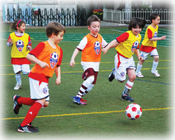

|
The British Football Academy is proud to present the: "Kids Summer Soccer Camp" at Camp Zama
Camp Zama: Dates: July 13-17 (inclusive). Ages: 5-18 year olds.
(More information: Zama Youth Sports and Fitness (sign-up deadline August 1)
The British Football Academy has developed a unique program of football-activities to be delivered to young enthusiasts of all abilities at Camp Zama. The coaches are all native English speakers who hold the requisite football-coaching licenses from England's governing body of football, The English FA (http://www.thefa.com).
The programs for the younger age groups (5-9 year olds) in the afternoons between 2:00pm~4:00pm will utilize FA-inspired football-related, fun games and activities to introduce and enhance the basic fundamentals of football to age and ability specific groups, these include: control; passing; dribbling; running with the ball; turning and of course shooting, whilst simultaneously introducing and enhancing game cognition and rules. We have a fun-first ethos, but strive to make the fun and games productive and progressive from day to day. With this in mind (and the same goes for older children attending the late afternoon sessions), we recommend that children attend for the entire duration of the camp, because the themes and activities have been designed to be built upon and extended, from day to day.
For the older children attending the late afternoon sessions (10-18 year olds at Camp Zama), the British Football Academy Coaches will be introducing a series of activities to introduce and hone specific skills and techniques that are age and ability-specific - activities that can challenge the more experienced players whilst not alienating those newer to the sport and again, the fact that the children attending these sessions are older, doesn't change our fundamental ethos of making Football-Fun-For-All!
We truly hope that all the children attending their first British Football Academy Soccer Camp, will thoroughly enjoy themselves, learn about themselves and sportsmanship and take away something extremely positive from their experience with us, aside from their free (limited edition) British Football Academy insignia soccer ball and camp T-shirt! (*for those attending for the entire duration of either camp).
We very much look forward to seeing you all on the field!!
 INTERLiga for Lions, Academy & Academy Stars players INTERLiga for Lions, Academy & Academy Stars players
Date: Saturday 2nd March 2013 (In case of heavy rain/snow, the event will be cancelled)
Venue: Yokohama Country & Athletic Club (Yamate, Yokohama)
Meeting time: 8:30am. Kick Off Time: 9am - 12pm
Application: Please email us by Monday 18th February, 2013
Participation fee: ¥3,000.
|
|